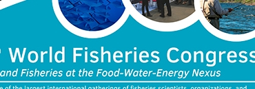

Organizado pelo Conselho Mundial de Sociedades de Pesca , a cada quatro anos, delegados de todo o mundo se reúnem para trocar ideias e perspectivas sobre novas pesquisas, questões emergentes, descobertas científicas e governança relacionadas à ciência, indústria, conservação e gestão da pesca.
Junte-se a nós em 2024 enquanto exploramos o tema do congresso de Peixes e Pescas no Nexus Food-Water-Energy . Estamos preparando um programa composto por plenária de abertura, sessões gerais, oficinas de educação e simpósios planejados relacionados à sustentabilidade, peixes e ecossistemas aquáticos, pesca e sociedade e inovações na pesca.
Como cidade anfitriã, Seattle é um local ideal para uma conferência internacional sobre pesca, com um aeroporto internacional, um sistema de metrô leve e transporte público. Lar de vários líderes acadêmicos, governamentais e da indústria em peixes e ciências da pesca, Seattle tem um centro vibrante cercado por florestas verdejantes, montanhas cobertas de neve, lagos e rios, Puget Sound e vários parques nacionais.
Detalhes adicionais sobre inscrições e o programa do congresso serão divulgados em breve. Estamos ansiosos para recebê-lo em Seattle.
Acesse o site